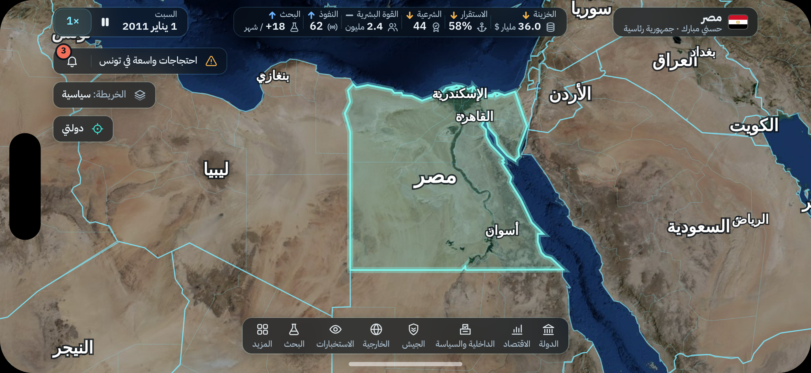
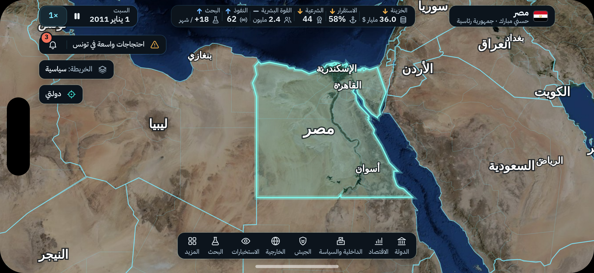
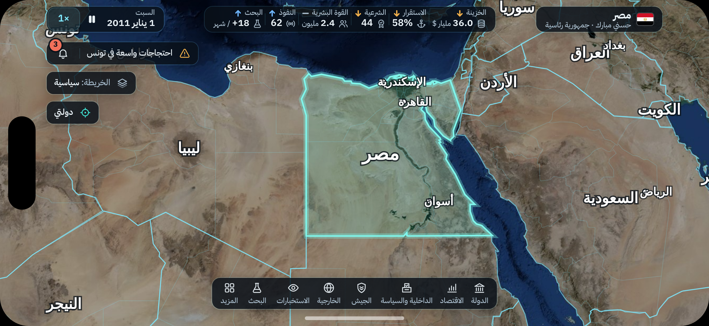

اللوحات: ضبابي أو غامق أو شفاف
شاشة اللعب على آيفون 17 برو ماكس · الفرق كله في اللوحات، والباقي نفسه
أ. المعتمد: زجاج ضبابيأجمل، ويسخّن الجوال شوي وأنت تحرك الخريطة
ب. غامقأخف شي، واللوحات صلبة ما يبين من تحتها شي
ج. شفاف بدون ضبابنفس خفة الغامق تقريبًا، والخريطة تبين من تحت اللوحات بدون ضباب
تقريب على اللوحات
أ. المعتمد: زجاج ضبابي
ب. غامق
ج. شفاف بدون ضباب